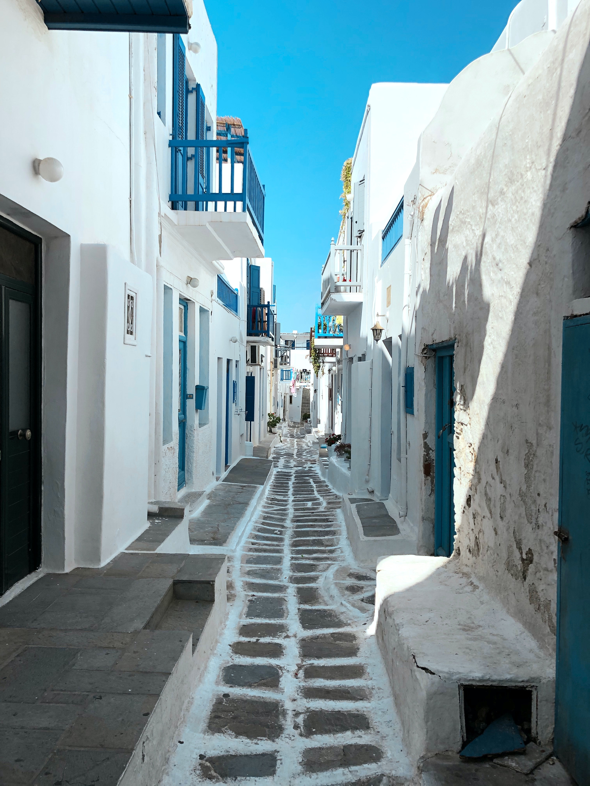
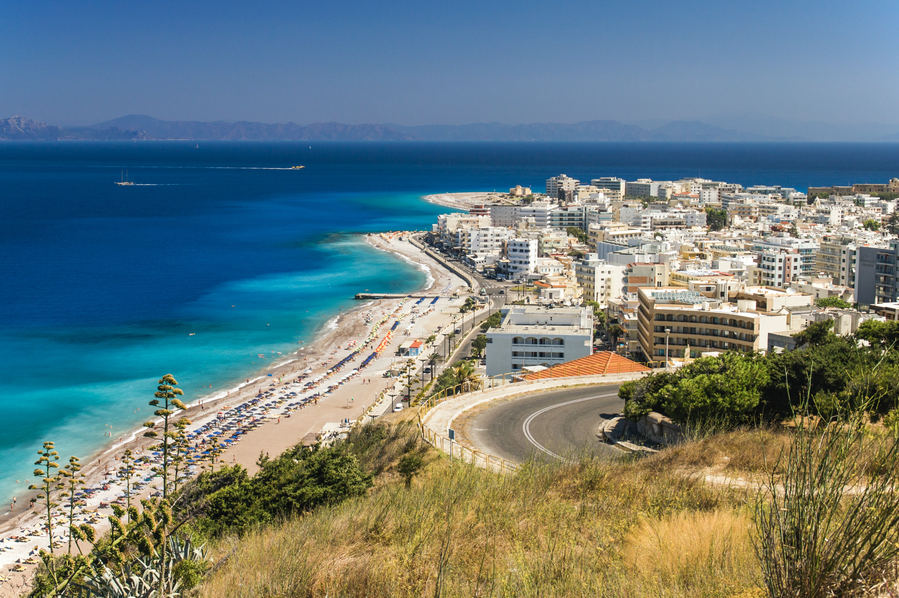
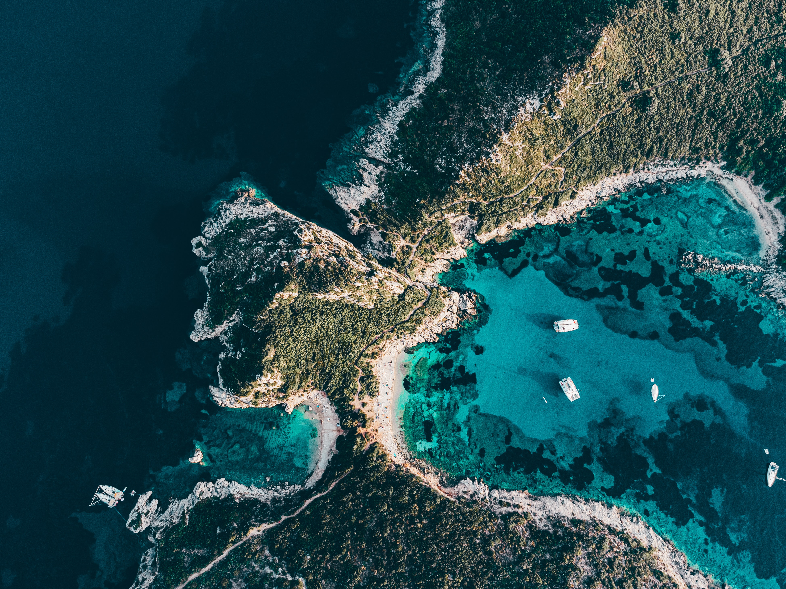
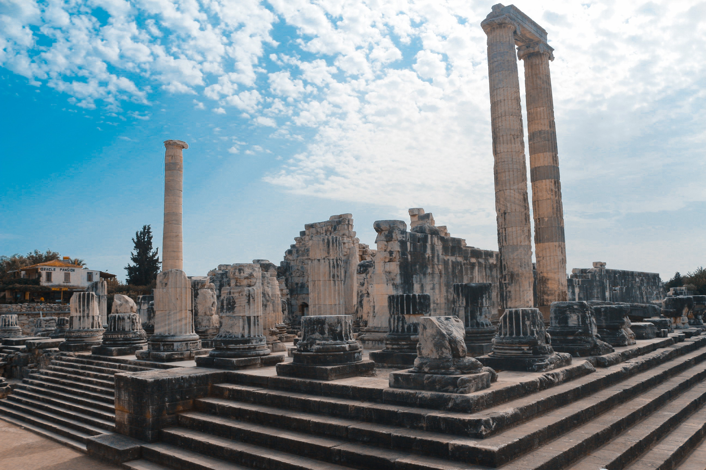
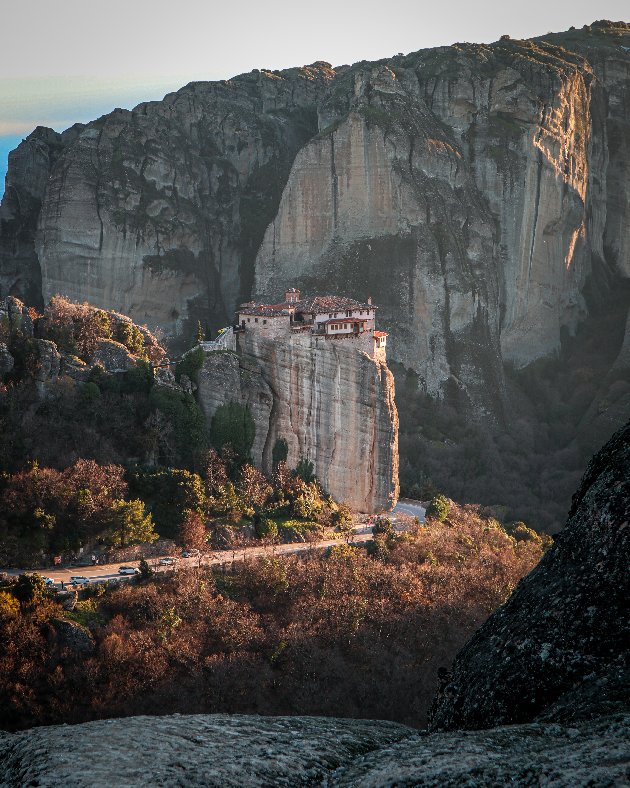
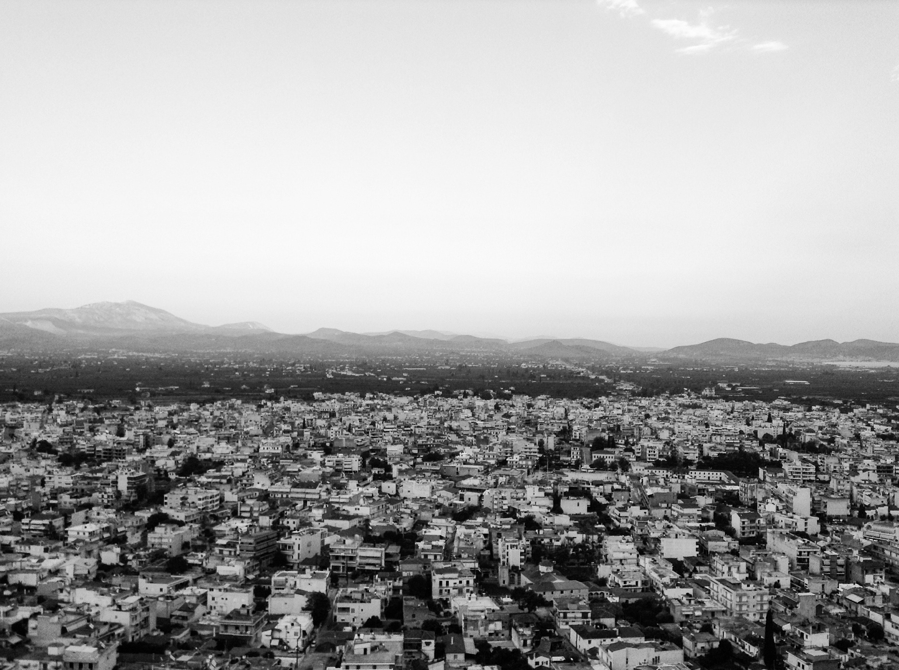

Greek Escapes
Travel Agency
Score significant deals on travel
with last minute bookings!
Discover the Wonders of Greece in Our Latest Travel Video
Escape to the idyllic beaches of Greece in our latest travel video. Immerse yourself in the crystal-clear waters, golden sands, and picturesque surroundings, of one of the most beautiful beaches in Greece. With its stunning natural beauty and laid-back atmosphere, this beach is the perfect place to unwind and soak up the Mediterranean sun. Take a stroll along the coastline, explore the hidden coves, or simply relax under the shade of an umbrella while enjoying the gentle sea breeze. Our video showcases the beauty and tranquility of this magical place, leaving you longing for your next trip to Greece. So sit back, relax, and let us transport you to the paradise of Greece's stunning beaches.
Top Destinations
-
Athens
the capital city and home to some of the world's most famous ancient
landmarks such as the Acropolis and the Parthenon.
-
Santorini
known for its stunning cliffside villages, beautiful beaches,
and blue-domed churches.
-
Mykonos
famous for its lively nightlife, picturesque streets,

and beautiful beaches. -
Crete
the largest island in Greece, known for its rich history, beautiful beaches,
and delicious cuisine.
-
Rhodes
an island in the Aegean Sea with a well-preserved medieval old town

and beautiful beaches. -
Corfu
an island in the Ionian Sea with a mix of Venetian, French, and British influences,

known for its beautiful beaches and lush green landscapes. -
Delphi
an important archaeological site and ancient sanctuary in

central Greece, known for its stunning views and history. -
Meteora
a unique rock formation with monasteries perched on top, located in central Greece.
 -
Nafplio
a charming coastal town with a beautiful old town, a Venetian fortress,

and stunning views. -
Peloponnese
a region of southern Greece with stunning beaches, ancient ruins,
and picturesque villages.